Phillip and Maria "Ry" Sorensen Mason Family Group
Home
Histories
Charts
Photos
Maps
Restricted
News
Info
Contact
 symbol is a link to a history, a source, and the chart
symbol is a link to a history, a source, and the chart  symbol is a link to a family group chart.)
symbol is a link to a family group chart.)|
and |
----> | 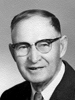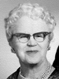 |
Phillip Mason Born 11 Mar 1880 Aurora, Sevier, UT Died 21 May 1966 Salt Lake City, UT Maria Sorensen Born 24 Sep 1884 Aurora, Sevier, UT Died 7 Oct 1965 Salt Lake City, UT Married 8 Feb 1906 Manti, Sanpete, UT | |
| 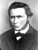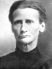 |
Hans Sorensen and Mathilda Torgersen Evensen |
| * |
Vonda Mason Born 29 Nov 1906, Died 22 Mar 1909 Aurora, Sevier, UT The 1st child of Phillip Mason and Maria Sorensen |
| * |
Deon Mason Born 13 Oct 1908, Died 21 Apr 1909 Aurora, Sevier, UT The 2nd child of Phillip Mason and Maria Sorensen |
| 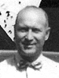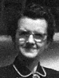 | Phillip Grant Mason Born 29 Mar 1910 Aurora, Sevier, UT Died 9 Sep 1994 Salt Lake City, UT Married Varna Johnson 30 May 1934 Manti, Sanpete, UT The 3rd child of Phillip Mason and Maria Sorensen |
| * |
Wendell Mason Born 3 Jun 1912, Died 12 Jun 1912 Aurora, Sevier, UT The 4th child of Phillip Mason and Maria Sorensen |
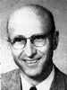1 2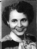 2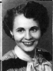 |
Orland "E" Mason Born 10 Apr 1913 Aurora, Sevier, UT Died 25 May 2005 Salt Lake City, UT Married Fawn Roberts 31 May 1939 div Married Ora "V" Morrill 28 Apr 1952 The 5th child of Phillip Mason and Maria Sorensen |
| 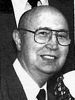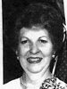 | Laun H. Mason Born 1 Mar 1915 Aurora, Sevier, UT Died 24 May 1992 Married Betty Jane Slye 8 Aug 1939 Salt Lake City, UT The 6th child of Phillip Mason and Maria Sorensen |
| 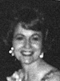12 |
Helen Mason Born 1 Aug 1917 Aurora, Sevier, UT Died 11 Oct 2006 Bountiful, Davis, UT Married Paul Erskin Campbell 21 Jan 1939 Salt Lake City, UT Married John Richard Reed 17 Aug 1949 Salt Lake City, UT The 7th child of Phillip Mason and Maria Sorensen |
| 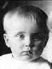 |
Iza Leaola Mason Born 14 Nov 1919, Died 17 May 1921 Aurora, Sevier, UT The 8th child of Phillip Mason and Maria Sorensen |
| 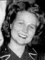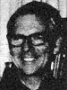 | Betty Lou Mason Born 10 May 1926 Aurora, Sevier, UT Died 5 Oct 2003 Coupeville, Island, Washington Married John Coyne 9 Jul 1952 Salt Lake City, UT The 11th child of Phillip Mason and Maria Sorensen |
| 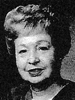12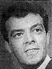 |
Beverly Mason Born 1930 Died 2011 Married William Taylor Stone 26 Aug 1950 Married Delbert Kent Lott 20 Jan 1958 The 13th child of Phillip Mason and Maria Sorensen |
| 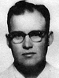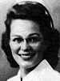 | Verr Don Mason Born 4 May 1922 Aurora, Sevier, Utah, USA Died 31 Dec 2011 Salt Lake City, Utah, USA Married Jean Holbrook Jean Holbrook 14 Jun 1946 Salt Lake City, UT Married Barbara Wiggins |
| 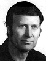 |
Gayland Mason (Noreen) |
| 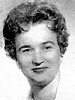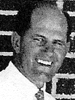 | Thelma Mason (Ralf Pollei) |